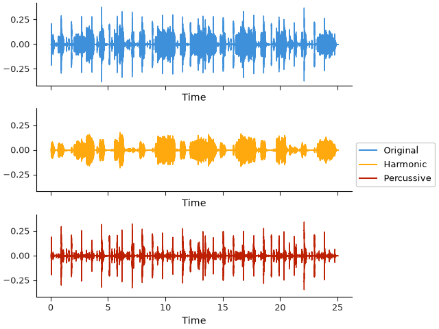
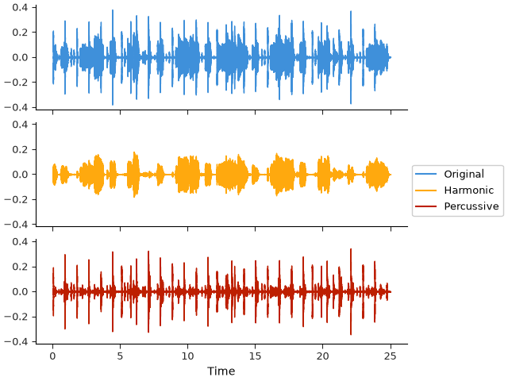
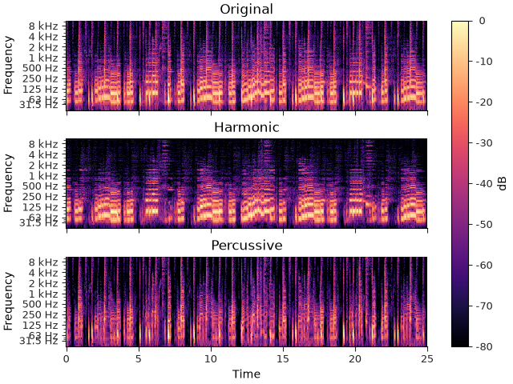
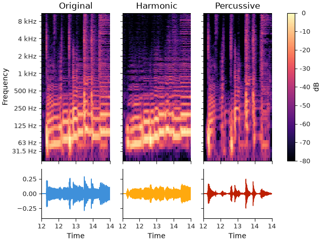
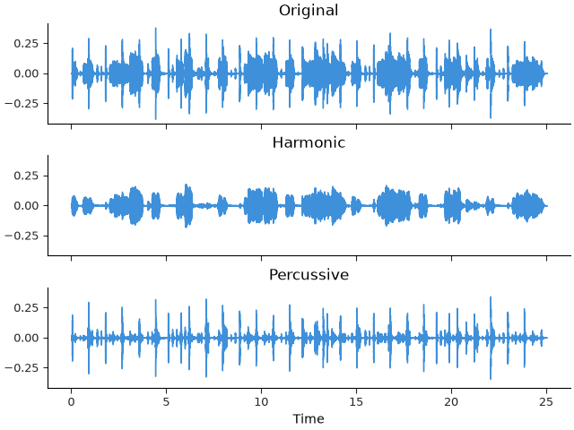
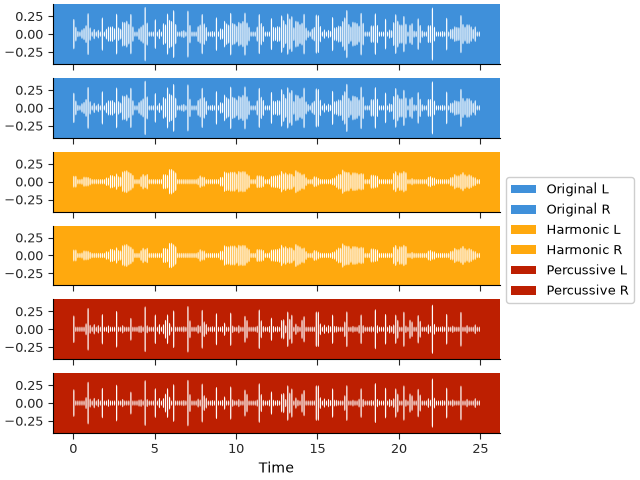
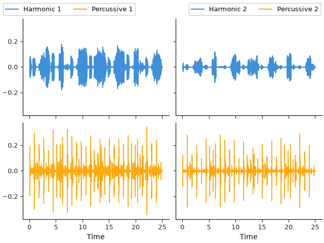

Note
Go to the end to download the full example code.
Multi-channel display#
This section illustrates methods for displaying multiple channels of audio data in a single figure.
Although librosa’s signal processing functions are designed to operate on multi-channel data,
the visualization functions generally assume a single channel of audio.
However, librosa does provide some functionality to simplify the construction of multi-channel
visualizations by mapping each channel of the data to a different subplot within a single figure.
This is achieved by the librosa.display.multiplot function.
Multiplot for waves#
As a first example, we can use librosa.display.multiplot to display the waveforms of multiple channels of audio data in a single figure.
To illustrate this, we’ll start with a monophonic signal and then decompose it into its harmonic and percussive components using librosa.effects.hpss.
We’ll then display the original signal, the harmonic component, and the percussive component in a single figure.
import librosa
import matplotlib.pyplot as plt
from IPython.display import HTML
y, sr = librosa.loadx("choice")
HTML(librosa.util.example_info("choice", html=True))
First, we’ll show how to plot the three channels individually onto a 3-row subplot array.
y_harmonic, y_percussive = librosa.effects.hpss(y)
fig, ax = plt.subplots(nrows=3, sharex=True, sharey=True)
librosa.display.waveshow(y, sr=sr, ax=ax[0], label="Original", color="C0")
librosa.display.waveshow(y_harmonic, sr=sr, ax=ax[1], label="Harmonic", color="C1")
librosa.display.waveshow(y_percussive, sr=sr, ax=ax[2], label="Percussive", color="C2")
fig.legend(loc="outside right")

This is relatively straightforward, but it can be done more succinctly with multiplot:
fig, ax = plt.subplots(nrows=3, sharex=True, sharey=True)
librosa.display.multiplot("waveshow", y, y_harmonic, y_percussive,
sr=sr,
labels=["Original", "Harmonic", "Percussive"],
axes=ax)
fig.legend(loc="outside right")

Under the hood, multiplot is doing several things to streamline the process:
It automatically assigns each input to a different subplot.
It matches all display parameters across all subplots.
It cycles colors (and other styling elements) across subplots.
It assigns labels to each subplot based on the labels argument.
Internal subplot axes are set to label_outer mode, hiding redundant decorations.
In the above example, we used multiplot with a variable-length list of arguments (y, y_harmonic, y_percussive), but it can also be used with a single multi-channel array, e.g.:
y_all = librosa.to_multi(y, y_harmonic, y_percussive)
librosa.display.multiplot("waveshow", y_all, sr=sr,
labels=['Original', 'Harmonic', 'Percussive'])
would also work fine.
Note
In all example code throughout the librosa documentation, we favor the “object-oriented” API of matplotlib, where we explicitly create a Figure and Axes objects and pass them to the display functions.
multiplot, like all other display functions in librosa, also supports the “pyplot” API, where the figure and axes are created implicitly. For example, the following code would produce the same result as above:
librosa.display.multiplot("waveshow", y, y_harmonic, y_percussive,
sr=sr,
labels=['Original', 'Harmonic', 'Percussive'])
and it will automatically create a new figure and appropriately sized subplot array for you.
Multiplot for spectrograms#
The example above dispatches the waveshow function to each subplot, but multiplot can also be used with specshow. For example, we can quickly construct a multi-channel spectrogram display as follows.
y_all = librosa.to_multi(y, y_harmonic, y_percussive)
stft_all = librosa.stft(y_all)
fig, ax = plt.subplots(nrows=3, sharex=True, sharey=True)
imgs = librosa.display.multiplot("specshow", stft_all, sr=sr,
y_axis="log_oct3", x_axis="time", vscale="dBFS",
titles=["Original", "Harmonic", "Percussive"],
axes=ax)
librosa.display.colorbar_db(imgs[0], ax=ax, location="right")

Just like with waveshow, all common display parameters are shared across the subplots. The return value for multiplot will always be a numpy ndarray of the same shape as the subplot array axes, where each element corresponds to the return value of the underlying display function (in this case, specshow) applied to that subplot. Here, we are using the first returned value to produce a single colorbar for the entire figure. Note that this is correct in this case because all three subplots share the dBFS value scale, which always results in a consistent color mapping. If the subplots had different value scales, then a single colorbar would not be appropriate.
For spectrogram displays, label is not the appropriate argument to use for labeling the subplots. Instead, multiplot will also accept a titles argument, which will be used to set the title of each subplot, as seen above.
Mixed multiplots#
Multiplot can also be used to mix different display functions across slices of a subplot array. This is done simply by slicing the axes array and passing it to different calls to multiplot.
fig, ax = plt.subplots(nrows=2, ncols=3, sharex=True, sharey="row",
gridspec_kw={"height_ratios": [3, 1]})
# Waves along the bottom
librosa.display.multiplot("waveshow", y_all, sr=sr,
labels=["Original", "Harmonic", "Percussive"],
axes=ax[1, :])
# Spectrograms along the top
imgs = librosa.display.multiplot("specshow", stft_all, sr=sr,
y_axis="log_oct3", x_axis="time", vscale="dBFS",
titles=["Original", "Harmonic", "Percussive"],
axes=ax[0, :])
# Colorbar on the top row only
librosa.display.colorbar_db(imgs[0], ax=ax[0, :], location="right")
# Zoom in for a better view of the waveforms
ax[0, 0].set(xlim=[12, 14])

Advanced styling#
By default, multiplot will automatically cycle through the style properties (e.g., colors)
for each subplot.
However, this is entirely configurable. Just like matplotlib.pyplot.subplots supports sharex and sharey parameters
to link axes of related subplots, multiplot allows properties to be shared in different ways.
By setting share_properties=True, all subplots are styled the same:
fig, ax = plt.subplots(nrows=3, sharex=True, sharey=True)
librosa.display.multiplot("waveshow", y_all, share_properties=True,
sr=sr,
# Use titles instead of labels, since now all three
# subplots have the same styling
titles=["Original", "Harmonic", "Percussive"],
axes=ax)

Similarly, setting share_properties=”row” or “col” will only link the style properties of subplots in the same subplot row or column, respectively.
multiplot goes one step further though, allowing any arbitrary group of subplots to share style properties. This can be helpful for creating DAW-like displays, where you may want to color-code groups of related subplots. To illustrate this, let’s simulate having a 6-channel display from our 3-channel data to simulate having three stereo pairs of channels, where each pair is color-coded to match the original channel. To group the subplots, we’ll create an array group that matches the shape of the subplot array, and assigns a group number to each subplot. Subplots with the same group number will share style properties.
For this example, we’ll switch to wavebars display mode with inverted colors, and reduce the spacing between subplots to zero to create a more compact display.
y_paired = librosa.to_multi(y, y, y_harmonic, y_harmonic, y_percussive, y_percussive)
fig, ax = plt.subplots(nrows=6, ncols=1, sharex=True, sharey=True, gridspec_kw={"hspace": 0})
# Property group is a list of size 6 here, but
# it could be a numpy array if the axes are multi-dimensional.
group = [0, 0, 1, 1, 2, 2]
librosa.display.multiplot("wavebars", y_paired,
share_properties=group,
sr=sr,
invert=True,
n_bars=200,
labels=["Original L", "Original R",
"Harmonic L", "Harmonic R",
"Percussive L", "Percussive R"],
axes=ax)
fig.legend(loc="outside right")

Legends#
In the examples above, we use fig.legend to create a single legend that aggregates plot elements from all subplots.
Sometimes, it may be helpful to have legends that are specific to subsets of subplots.
While this can be done manually by managing lists of matplotlib artist handles, librosa provides a convenience function
librosa.display.legend_for_axes that can be used to create legends that are restricted to a subset of subplots.
To illustrate this, we’ll create another harmonic-percussive decomposition with a more aggressive separation, and plot them alongside the original decomposition in a 2-by-2 subplot array.
y_harmonic2, y_percussive2 = librosa.effects.hpss(y, margin=(8, 4))
fig, ax = plt.subplots(nrows=2, ncols=2, sharex=True, sharey=True)
librosa.display.multiplot("waveshow", y_harmonic, y_percussive,
sr=sr,
labels=["Harmonic 1", "Percussive 1"],
axes=ax[:, 0])
librosa.display.multiplot("waveshow", y_harmonic2, y_percussive2,
sr=sr,
labels=["Harmonic 2", "Percussive 2"],
axes=ax[:, 1])
librosa.display.legend_for_axes(ax[:, 0], loc="outside upper left", ncols=2)
librosa.display.legend_for_axes(ax[:, 1], loc="outside upper right", ncols=2)

Summary#
Librosa’s multiplot function provides a convenient way to create multi-channel visualizations of audio data. It can be used to display multiple channels of audio data in a single figure, and it can also be used to mix different display functions across slices of a subplot array. The share_properties argument allows for flexible styling of subplots, and the legend_for_axes function provides a convenient way to create legends that are restricted to a subset of subplots.
Total running time of the script: (0 minutes 21.337 seconds)